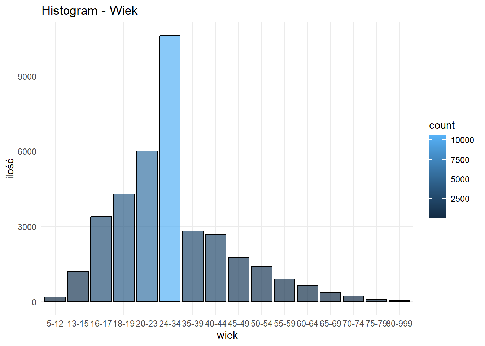
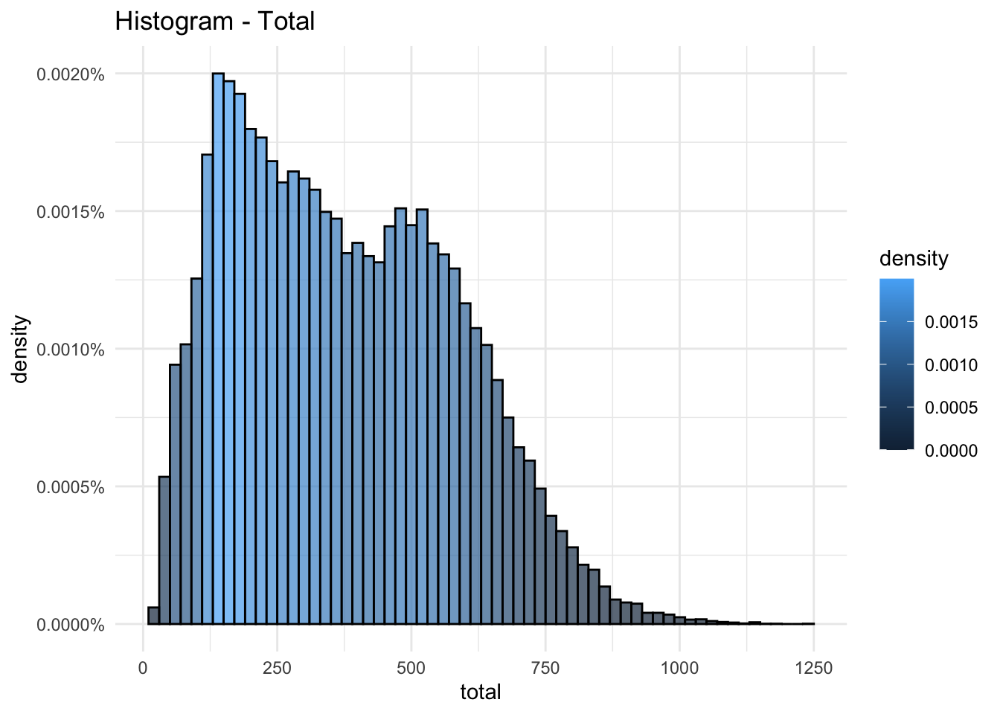

library(tidyverse)Analiza wyników w trójboju
1. Wstęp
Przedmiotem analizy są dane ze zbioru zawierającego informacje na temat trójboistów zrzeszonch w ramach federacji IPF. Dane zostały udostępnione na warunkach licencji GNU AGPLv3. Głównymi zmiennymi, które będą nas interesować są AgeClass, Sex (zmienne kategoryczne określające przedział wiekowy zawodnika oraz jego płeć) oraz zmienne ciągłe BodyweightKg, TotalKg, które wyrażają masę ciała zawodnika, oraz wynik całkowity będący sumą wyników w poszczególnych bojach (przysiad ze stangą, wyciskanie na ławce oraz martwy ciąg).
1.1 Pytania badawcze
W ramach analizy postaramy się odpowiedzieć na następujące pytania:
Czy istnieje zależność między wagą a wynikiem całkowitym?
Jakie parametry opisują rozkłady poszczególnych zmiennych?
W jaki sposób różnią się rozkłady wyniku oraz wagi w zależności od wieku i płci?
2. Ładowanie danych
Wpierw przystąpimy do załadowania potrzebnych bibliotek
Teraz odczytamy dane z pliku csv.
probka <- read.csv("../powerlifting.csv")Będziemy poddawać analizie próbkę o długości 50 000 obserwacji.
nrow(probka)[1] 50000Tak się prezentuje 10 początkowych obserwacji
head(probka) Name Sex Event Equipment Age AgeClass BirthYearClass
1 K Leong M B Raw NA 18-19
2 Sergei Khitrov M SBD Raw 38.0 35-39 24-39
3 Michael Werschem M SBD Wraps 20.0 20-23 19-23
4 Ray Hickman M B Multi-ply 28.5 24-34 24-39
5 John Robinson M B Multi-ply NA 40-44 40-49
6 Alexis Lafever F SBD Single-ply NA
Division BodyweightKg WeightClassKg Squat1Kg Squat2Kg Squat3Kg Squat4Kg
1 17+ 82.5 82.5 NA NA NA NA
2 Open 86.6 90 200 210 212.5 NA
3 Juniors 20-23 103.6 110 175 195 225.0 NA
4 Open 75.0 75 NA NA NA NA
5 Masters 40-44 NA 140+ NA NA NA NA
6 Girls 82.1 82.3 NA NA NA NA
Best3SquatKg Bench1Kg Bench2Kg Bench3Kg Bench4Kg Best3BenchKg Deadlift1Kg
1 NA NA NA NA NA 65.00 NA
2 212.5 160.0 -165 165.0 NA 165.00 240.0
3 225.0 112.5 125 -137.5 NA 125.00 207.5
4 NA NA NA NA NA 177.50 NA
5 NA NA NA NA NA 328.85 NA
6 NA NA NA NA NA NA NA
Deadlift2Kg Deadlift3Kg Deadlift4Kg Best3DeadliftKg TotalKg Place Dots
1 NA NA NA NA 65.00 6 44.03
2 260.0 270 NA 270.0 647.50 6 427.10
3 237.5 NA NA 237.5 587.50 1 356.26
4 NA NA NA NA 177.50 2 127.34
5 NA NA NA NA 328.85 1 NA
6 NA NA NA NA NA DQ NA
Wilks Glossbrenner Goodlift Tested Country State Federation
1 43.54 41.90 32.75 Yes Australia QLD PA
2 421.86 405.01 87.74 Russia IPL
3 352.75 336.82 72.99 Yes USA OK USPA
4 126.48 122.21 68.34 Yes USA WABDL
5 NA NA NA USA SC SPF
6 NA NA NA Yes THSWPA
ParentFederation Date MeetCountry MeetState MeetTown
1 IPF 2002-01-01 Australia
2 IPL 2017-12-15 Russia Dolgoprudnyy
3 IPL 2022-06-11 USA OK Norman
4 2000-08-05 USA OR Wilsonville
5 2008-07-19 USA AL Tuscaloosa
6 2017-01-14 USA TX Coronado Middle School
MeetName
1 Australian Schools Postal Bench Press
2 World Cup
3 Drug Tested Oklahoma State Championships
4 World Cup
5 Temple Gym Classic
6 Plainview Invitational2.1 Transformacje danych
Interesować nas będą tylko zmienne AgeClass, “Sex”BodyWeightKg, Best3BenchKg, Best3DeadliftKg, Best3SquatKg, TotalKg
probka <- probka[, c("AgeClass", "Sex", "BodyweightKg", "TotalKg")]
summary(probka) AgeClass Sex BodyweightKg TotalKg
Length:50000 Length:50000 Min. : 20.00 Min. : 12.5
Class :character Class :character 1st Qu.: 67.20 1st Qu.: 204.1
Mode :character Mode :character Median : 81.90 Median : 356.1
Mean : 84.12 Mean : 378.3
3rd Qu.: 98.79 3rd Qu.: 533.0
Max. :241.10 Max. :1250.0
NA's :644 NA's :3339 Napotykamy pierwszy problem. Wszystkie zmienne są typu character, gdy powinny być typu
numericdla BodyweightKg, Best3BenchKg, Best3SquatKg, Best3DeadliftKg, TotalKgfactordla AgeClass oraz Sex
Dokonajmy więc konwersji
probka$BodyweightKg <- as.numeric(probka$BodyweightKg)
probka$TotalKg <- as.numeric(probka$TotalKg)
probka$AgeClass <- as.factor(probka$AgeClass)
probka$Sex <- as.factor(probka$Sex)summary(probka) AgeClass Sex BodyweightKg TotalKg
:13419 F :12515 Min. : 20.00 Min. : 12.5
24-34 :10615 M :37484 1st Qu.: 67.20 1st Qu.: 204.1
20-23 : 6007 Mx: 1 Median : 81.90 Median : 356.1
18-19 : 4300 Mean : 84.12 Mean : 378.3
16-17 : 3383 3rd Qu.: 98.79 3rd Qu.: 533.0
35-39 : 2819 Max. :241.10 Max. :1250.0
(Other): 9457 NA's :644 NA's :3339 Dokonamy teraz zmiany nazw kolumn na bardziej przystępne
colnames(probka) <- c("wiek", "plec", "masa", "total")
head(probka) wiek plec masa total
1 18-19 M 82.5 65.00
2 35-39 M 86.6 647.50
3 20-23 M 103.6 587.50
4 24-34 M 75.0 177.50
5 40-44 M NA 328.85
6 F 82.1 NA3. Histogramy
Code
# Plot normalized histograms for each level of the "wiek" factor
ggplot(probka, aes(x = wiek, y = ..count.., fill = ..count..)) +
geom_bar(color = "black", alpha = 0.7, position = "identity") +
ggtitle("Histogram - Wiek") +
theme_minimal()
ggplot(probka, aes(x = plec, y = ..count.., fill = ..count..)) +
geom_bar(color = "black", alpha = 0.7, position = "identity") +
ggtitle("Histogram - Wiek") +
theme_minimal()
ggplot(probka, aes(x = masa, y = ..density.., fill = ..density..)) +
geom_histogram(binwidth = 7, color = "black", alpha = 0.7, position = "identity") +
ggtitle("Histogram - Masa") +
theme_minimal() +
scale_y_continuous(labels = scales::percent_format(scale = 1))
ggplot(probka, aes(x = total, y = ..density.., fill = ..density..)) +
geom_histogram(binwidth = 20, color = "black", alpha = 0.7, position = "identity") +
ggtitle("Histogram - Total") +
theme_minimal() +
scale_y_continuous(labels = scales::percent_format(scale = 1))

